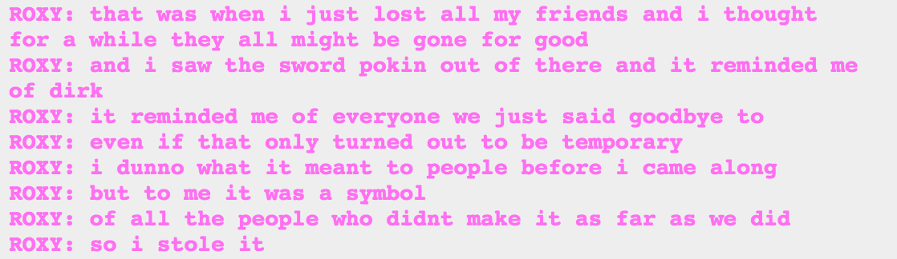
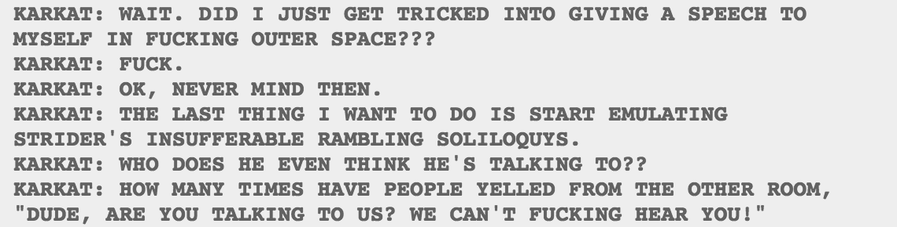
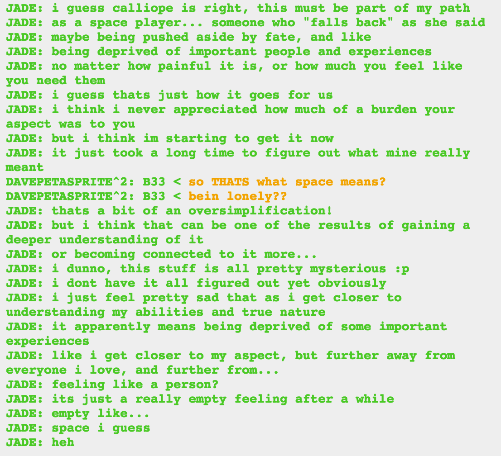

Curious how the first text introduces Spades Slick the same way he was introduced in the intermission. The first intermission. Obviously we are now in for a lot more time shenanigans (which was a given, anyway). Also, at last, Spades Slick can get vengeance on Lord English. Like he wanted thousands of pages ago. Daaaaamn that was a long time coming.
So Dirk and Dave are waiting for Lord Jack. But Robo Jack is about to engage him, with only Jake as backup, if Jake chooses to help, and the Felt as well if they land for battle. That’s…not good. And Robo Jack has LE’s pool cue, which I’m preeeeeeetty sure won’t be very good for Dirk and Dave if LJ is allowed to get it and continue on. But maybe LJ will get waylaid completely and it’ll give Dave and Dirk time to talk about being gay, and that would be best.
I’m pretty sure that fourth wall break is going to be significant somehow, but it beats me how. It amused me though.
Sooooo…back to doing liveblogs how I used to, I guess? (You guys like that, right? I like showing exactly what I’m talking about, even though we all just read it. But we did all just read it…But I think this is a lot easier to read than when people just link to the pages?)
I am also let down! I guess a big reaction would be weird, I don’t expect John to be spitting in surprise or anything, but his hatred of Betty Crocker was such a big deal in the beginning of the comic! I want something more from John.
Of course, even John realizes that that’s the point. His hatred of Betty Crocker in the beginning was childish, and he is no longer a child childish. These dialoglogs are showing how the various characters have grown up since we last saw them. Part of that is that John is keeping his reaction to things in line with the reality. He used to overreact, now he’s not. Character growth! Not quite as dramatic as Roxy’s, but still there.
I love this picture so much. I love whoever is doing the art. I really want to know what Jane is thinking. Jane is kind of the outcast of her group, especially after they combined with the other kids and the trolls. Dirk and Jake were obviously a pair, and Dirk and Roxy have a special bond because of how each of them had low self esteem but held the other in high regard. Jane was close to all of them but she was also somewhat on the outside. Crushing on Jake but never being able to pursue him, never in the running for group leader, and then taken over by Condy and asleep while others were bonding. I think Jade kind of fills the same role, but she’s not quite as…sad about it? It helps that Jade has become a god among gods. Also Jane appears to be looking at Rose and Kanaya, not Roxy and John, and not at the entire scene, so I assume it’s not actually about everyone else present pairing up. Does she have something special going on with Rose or Kanaya? I can’t recall.
And Roxy and Rose are both making the same eyes at their paramours. I love those expressions. They look so happy, and so full of love. It’s adorable. They’re about to fight the biggest fight of their lives, but for the moment they’re just happy to be with the person they love.

So mostly that other post I linked does Roxy better than I could and I won’t bother rewriting it, but I think it’s really important for us to notice how much the Game Over timeline affected Roxy. She saw all her friends die, and it made her stronger and more resolved, without damaging her optimism. She believes in herself and her abilities, even after terrible things happened to her. Actually because terrible things happened. The Game Over timeline ended in a complete horror show. It destroyed that version of Dirk. And I started rereading it so I could say intelligent things about Roxy, and it’s just…it’s so sad. Roxy rescues Rose after Rose got stabbed and then begs her not to die. And then Rose tells Roxy she loves her and DIES. The dialogue is intentionally corny and it still hurts.
Anyway. Roxy is amazing. She’s been given a second chance and she is grabbing it with both hands. She’s witnessed the worst case scenario, she knows it’s possible, but she’s not entertaining it at all. And that’s what makes her a great leader. What a pity that Rose and Kanaya were gazing lovingly into each other’s eyes and missed her inspiring speech.
(I still think the Condesce is really hot.)
I’m guessing that Meenah doesn’t know about the Game Over yet. Maybe it doesn’t really matter to her? All that matters is that this Karkat doesn’t remember their conversation. Still…it’s odd, isn’t it? That the alpha timeline now doesn’t include the conversations with the dancestors. Some of those conversations were kind of important. I guess Kanaya figured out how to turn off her glow by herself.

Well, apparently all that character development hasn’t given Karkat self-awareness. You’d think he would get that he’s constantly talking to himself, right? But I guess because he talks back, it’s okay. Karkat can’t admit that he’s super like Dave, but he is. Who else remembers that post where if you take Karkat’s speeches and turn them all lowercase, he sounds just like Dave? And if you capslock Dave’s posts they sound like Karkat.
I love those boys. They’re like the opposite sides of the same coin…except they’re really just the same side, telling themselves that they’re opposite.
(See, this is one of those times when it feels weird to screencap something, but also weird to not do it.)
This makes me think that the Jack Off (heh) is going to end with Lord Jack very easily defeating Robo Jack and continuing on to fight Dirk and Dave, and handily defeating them both with the help of Lord English’s cue/staff/gun. I still think we’ll get a Dirk and Dave heart to heart beforehand,
I know BKEW is convinced that Dave is about to die, and other equally talented meta writers, whose names I can’t remember, think that Dirk is likely to die. I really hope Dave doesn’t die–and not just because I like him and not just because he’s part of my OTP, but because he’s been so suicidal and so convinced that his life is pointless. Even if he gets some peace and then sacrifices himself…narratively and thematically it sucks. He was raised by someone who hated him, or at least he grew up thinking he was hated. He hated himself. And now he’s finally found love, not just from Karkat but from another version of his abusive caretaker, who can now give him love and closure in the most amazing way. To cap that off with his sacrifice would just go back to where he was before, with him thinking that everyone is better off with him dead. Nope, do not want.
I really don’t want Dirk dead, either. But my argument isn’t as strong. Dirk didn’t have that same self esteem issue. He’s got some self-hatred, but it doesn’t approach Dave’s. He always had people who loved him, even if he didn’t feel worthy. And we can say that one way to prove to himself that he’s worthy is to sacrifice himself for Dave. He just realized how truly awful he can be by learning about Bro, and sacrificing himself would be the ultimate denial of that part of himself. But he’s still a 16-year-old kid who has suffered, and who has worked to make himself a better person. He still deserves to live.
Jesus christ that got long. Apparently I have strong feelings on Strider death. I over identify with them, I guess.
Anyway, Karkat saying that he hopes Dave is okay is heavy foreshadowing that Dave won’t be okay. And there are a lot of ways for this to end badly that don’t involve anyone’s death. Maybe Dave and Dirk are so laughably weak compared to Lord Jack that he doesn’t bother killing them? Maybe I’m just clinging to anything that I can to be sure that the Striders won’t die!
Is Calliope talking to Jade her, or to alpha!Callie? Humans are soft, for sure, but “the ability to dominate” isn’t something I would say about Jade, her power isn’t really about domination. It’s alpha!Callie who was too soft to dominate, really. And we know that Callie doesn’t like seclusion, and even after Caliborn murdered her she doesn’t have the resolve to hate him.
Alpha!Callie seems a lot like Karkat. They’re both alien species, but are incredibly human. (For that matter, Caliborn/Lord English also seems to be infected with humanity, since he’s done things very unusual for cherubs: killing his sister and improperly and unhealthily predominating, having a kink for pale and red romance.) Calliope looks down on Jade for her humanity and judges her less capable, but Homestuck is definitely putting humanity up as a sort of ideal. Our new, wonderful universe is going to be ruled over (or perhaps guided is a better word) by a troll who is incredibly human, and that’s what the all-knowing Echidna wants, even. All eight of our humans are still alive, compared with…less than half of our trolls and cherubs? In Homestuck, humans are great.
(I suppose we could say that Callie is more troll-ish than human-ish but despite her trollsona, I think she’s more human. All of our trolls are a bit human, but if we judge trolldom not from them but from the ancestors, we see that they tend to be aggressive, remorseless, more absolute in their views of the world, more antisocial, and generally harsher. Very unlike Callie. Even the kinder, gentler, laconic pre-scratch trolls don’t have a lot in common with Callie.)

SUPER LONG QUOTE BECAUSE I HAVE SO MANY FEELINGS ON IT.
I said before that I do not think this doomed timeline Calliope is a reliable source of information. Before I was talking about when she said that Callie isn’t that important in the grand scheme of things. Obviously she’s wrong about that, but we know things that she doesn’t because we’re the audience and we know how stories work. Now I think she’s wrong about space as an aspect.
Don’t get me wrong, she gives good insights, but Calliope is a defeated, defeatist figure. She was told that winning her dead session was impossible, so she gave up. Ridiculous! How often now have we had characters who were told to do something impossible, only to discover later that it is possible, it just required them to think about reality and their own abilities in a way they never had before? Calliope doesn’t believe in herself, and she doesn’t believe in other people, and that’s what will doom you in a game of Sburb. All of our strongest characters are strong because they believe in themselves.
So when Calliope says that space players need to fall back, that they are pushed around by fate and miss out on important experiences? I call bullshit. Oh sure, it seems true right now, because none of us have the full picture. Especially not Calliope, who can’t see past her own emotions and her own failure.
Just look at Kanaya, if you want to see why this is wrong. The matriorb was destroyed, and for a long time she had to sit back and wait. And she felt like a hopeless failure because it got destroyed, but now it’s back, and she can bring her species to life again! Space players may have long stretches of emptiness and inactivity, like space itself, but they are also full of action! Power! Life! Falling back isn’t the end, there will always be a charge after a retreat.
The point is: Calliope is wrong about Jade, and wrong about America.